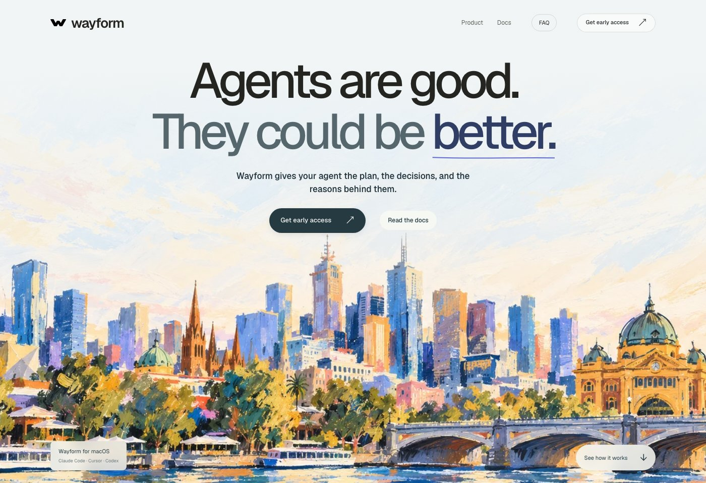
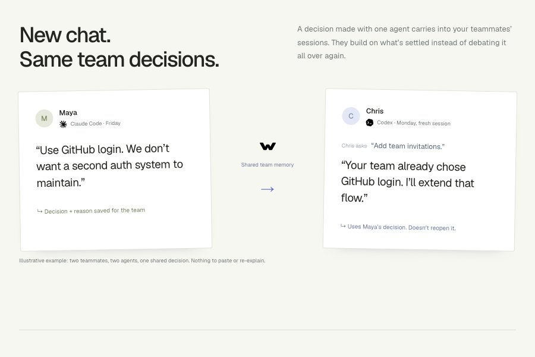

Wayform
Developer tools · TypeScript
A macOS app and CLI that gives coding agents shared memory: the plan, the decisions and the reasons behind them. A decision made in one teammate's Claude Code session is already loaded when another opens Cursor or Codex.
- Serves: teams that build with AI agents
- Co-built with Skanda



Ingredients
 TypeScript
TypeScript Node.js
Node.js Git
Git- Cloudflare Workers
Method
- Write each settled decision as "we decided X because Y" into a private git repo the team owns. Commits are append-only, so git log doubles as the audit trail.
- Serve that store through an MCP server, so Claude Code, Cursor and Codex all read and write the same decisions.
- When a session starts, a hook loads every decision as context. A new chat already knows what the team ruled out.
- Before a pull request opens, have the agent check the diff against the plan. Once it merges, the plan and its decisions join the shared memory.
- If an action clashes with a recorded decision, stop and ask a person to make the call.
Chef's Notes
Keep the writes curated: a decision and its reason, not every thought the agent had. That is what keeps the memory worth loading into every session. And don't rebuild what git already does well. Borrowing its history and consistency meant no vendor database holds the team's decisions.